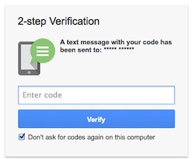
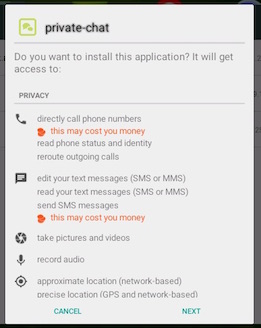
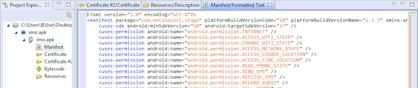

Increased Use of Android Malware Targeting Journalists
Public Notice (24 August 2015)
Background
On August 4, 2016, a Technical Preview of our forthcoming Carnegie Endowment publication about Iranian state-sponsored actors was presented at Black Hat USA in Las Vegas. This research is primarily focused on intrusion campaigns directed at civil society organizations and independent media originating from Iran. The attack data supporting this report is collected from actual incidents and is intended to rigorously describe the threats that are posed to non-governmental and non-corporate sector by state actors.
Since Black Hat, we have been encouraged to provide continuing information and indicators on threats posed to the Iranian human rights community. We have sought to ensure transparency on our research and engage in quick disclosure, where such disclosure does not pose ethical considerations or decrease our ability to respond to victims of state repression. For the technical community these tactics and techniques may not always be novel, but they remain effective.
This Public Notice is intended to alert the broader Iranian community to recent incidents and provide information to encourage improved security practices.
Abstract
In recent weeks, Iranian groups have increased their use of Android malware in order to compromise foreign journalists and political activists focused on the country. These incidents have involved the use of fictitious personas and compromised accounts in order to turn on others. Alongside Android malware, the group uses a familiar tactic of sending fake login pages for Facebook, Google, Yahoo and Microsoft in order to obtain account credentials through phishing. Finally, while two factor authentication (2FA) remains a critical resource to protect accounts, an observed compromised further highlights the need to move away from using the text message method onto Google Authenticator.
Incident and Impact
On August 20, 2016, the Facebook account of a political activist based in Europe was compromised through an impersonation login page sent by an individual that had claimed to be a past acquaintance.
Once the intruders had access to the Facebook account, they posed as that individual in order to start conversations with his social network, particularly journalists within the Persian-language media community that would be familiar with his work. This is a common tactic that we have documented in several incidents, posing as a trusted person with a breached account to attack their personal network. In one conversation, the intruder asked a journalist for their private contact information and sent what they claimed were “important documents” that needed to be reported.
In reality, the link sent to the new target was an impersonation login page for Google Drive – a phishing attempt intended to deceive them into entering their username and password. These pages are often hosted on domains that appear to be connected to Google or Facebook, and appear official through jargon (such as “verifyuser-login-account.com”). These pages also may support a secure web connection (HTTPS) in order to appear legitimate and in thwart previous advice on spotting fakes. From other experiences, in the event that the deception is not successful, the attackers will commonly increase the pressure on targets to open the document or turn to threats in order to force cooperation. One compromised, the attacker creates an offline backup of emails to ensure that an archive of their contacts and communications is still available if they are locked out of an account.
While one target had enabled two factor authentication (2FA) through text message, the attackers were able to handle this through asking for the codes from the user. Iranian groups have long adapted their strategies to confront the use of this security mechanism, and now include an extra step to obtain the two factor code where it is enabled. The problem in this case is that the codes sent via text message are valid for longer periods of time. This longer lifespan provides the attacker enough time to ask the user for the real code that is sent from Google, and then enter it themselves. This is addressed further in Recommendations.
Importantly, the attackers have also sent Android application files (APKs) to recent targets. This incident represents a growing trend in the use of Android malware in targeting activists and journalists over recent months. In other encounters, the Android malware posed as the messaging applications such as IMO. We have witnessed cases where these clients were sent claiming to be secure chat software. International Campaign for Human Rights in Iran has also indicated that attackers have posed as an “old friend” on other messaging services and encouraged them to install the malware client to continue the conversation. In other cases. we find the picture of the target strangely embedded in the icon of malware.
No matter the social engineering strategy, the Android applications sent to targets were remote access tools (RATs) that would provide full access to a victim’s phone for an attacker in Iran. On installation, these applications would appear as “private chat” or "com_google_sevices" (sic), and quietly record the device’s activities in the background. This software requests all permissions on the phone, and then persistently collects and monitors text messages, emails, photos, microphone, location and other private information. The use of Android malware is effective because of the popularity of the platform, and mobile devices overall, in Iran. Sanctions and other restrictions have also led to more Iranian users installing applications from non-official sources, decreasing the security of their devices.
In the incidents in question, the Android malware used was the “DroidJack” agent, a RAT frequently found in other criminal activities. The fake IMO client is the Meterpreter agent developed for the open source platform Metasploit. We also noted the use Metasploit in malicious documents in our Technical Preview, as has Check Point in “Rocket Kitten: A Campaign With 9 Lives” and others. This is also not the first time that Iranian actors have been observed using mobile malware, and Citizen Lab has documented the use of the same DroidJack RAT against Syrian dissidents by unknown actors believed to be based in Iran. A full description of the capabilities of the Android malware is not in scope for this notice, as Citizen Lab and Symantec have extensive described the agent in question.
We find indication of another Android RAT named KrakenAgent, which is a full featured malware. While the tactics found in the KrakenAgent malware attempts have been directed against activists, it’s targeting appears to be global in scope. The task list of the malware describes an ambition to fully control the phone and monitor all aspects of the use of their device.
"Call Number", "Capture Audio", "Capture Picture", "Capture Video", "Delete Contact", "Delete File", "Delete Recent Call Log", "Delete SMS", "Disable Agent", "Get Application List", "Get Bluetooth List", "Get Browser History", "Get Chrome Credential Store", "Get Contact List", "Get Current Cell Info", "Get Default Browser Credential Store", "Get Device Info", "Get Directory Listing", "Get File", "Get Location", "Get Neighbouring Cell List", "Get Recent Call Log", "Get SMS", "Get Skype Database", "Get Viber Database", "Get WhatsApp Database", "Get WiFi List", "Open URL In Browser", "Record Call", "Send SMS", "Send USSD", "Volume Change"
Notable actions with KrakenAgent include copying the username and passwords stored on the phone, stealing messages (Skype, Viber, SMS and WhatsApp), and using the phone as an eavesdropping device.
We believe based on observations highlighted in our Technical Preview that the incident and aspects of the campaigns (however, not necessarily all) are similar to those conducted by the Rocket Kitten group, which has been described elsewhere as acting on behalf of the Iranian government.
Recommendations
The incident is indicative of common trends in the tactics used by Iranian groups to target interests inside of the country and in the diaspora. While the intent of this disclosure is not to provide a full digital security lesson, there are simple changes to settings and behaviors that can reduce the effectiveness of these attacks.
Use a Alternative Two Factor Authentication (2FA) Method Than Text Message
The codes provided by text message are valid for a longer amount of time compared to other the application method, which presents social engineering opportunities for attackers. Text message codes are also considered unsafe due to security issues with mobile networks, and so their use is increasingly discouraged where a better replacement is possible. Google and other platforms provides methods of generating codes that are similar to text messages, and may be easier to use, such as Google Authenticator or a Yubikey.
As an example, please see Google’s help page on Authenticator.
Exercise Caution with Documents and Links
Be cautious when people offer documents over social networks, and consider confirming that you are speaking with the right person over phone. We have witnessed many cases where people realized they were being targeted when the person they were supposedly speaking to couldn’t talk claiming they lost their voice. Be suspicious when someone is asking for a code from you – this could be a login or password reset code sent from your service provide to gain access to your accounts.
In general, take an extra moment to consider the situation when someone claims to be sending a “secure” document or anything that requires sending them a “code.”
Check What You Are Typing Your Password Into
Impersonation sites often have Google or Facebook in the name, but still are not the service in question and are instead malicious (e.g. “privacy-google.com”). Anytime that a site asks for your username and password, be alert and pause. Why is it asking for your information? How did you get to this page? Are you still logged into your account elsewhere?
Do Not Install .APK Files From Untrusted Sources
Do not install Android applications and run executable files (.EXE or .SCR) from unknown sources, including from friends or untrusted websites. Be especially sensitive if the application that is being installed requests permission for private data and features like the microphone.
Do not allow applications from “Unknown Sources” to be installed.
Contact
Certain information has been withheld for privacy or operational reasons outlined above, but we are happy to provide information to security professionals and targeted organizations in order to support defensive work. We also welcome samples and feedback on our research. If you have any questions, concerns, or requests for further information please contact us.
Claudio (nex@amnesty.org)
- PGP Key: https://nex.sx/nex.asc
- Fingerprint: E063 75E6 B9E2 6745 656C 63DE 8F28 F25B AAA3 9B12
Collin (cda@asc.upenn.edu)
- PGP Key: https://cda.io/key.asc
- Fingerprint: 510E 8BFC A60E 84B4 40EA 0F32 FAFB F2FA
Indicators of Compromise
افزایش استفاده از بدافزارهای اندرویدی برای هدف قرار دادن خبرنگاران
اطلاعیه عمومی (سوم شهریور ۱۳۹۵)
تاریخچه
در ۱۴ مرداد ۱۳۹۵ یک پیش نمایش فنی از گزارشی که در آینده توسط انتشارات Carnegie Endowment منتشر خواهد شد در مورد هکرها دولتی ایران در کنفرانس کلاه سیاه در شهر لاس وگاس ایالات متحده منتشر شد. اولویت این تحقیق بر روی کمپینی است که هدفش نفوذ در سازمانهای جامعه مدنی و رسانههای مستقل ایرانی است. دادهها از حوادث واقعی جمعآوری شدهاند و قرار است با دقت تهدیدهایی را شرح دهند که از سوی بازیگران دولتی متوجه بخشهای غیردولتی و غیر اقتصادی میشوند.
پس از کنفرانس کلاه سیاه، ما تشویق شدیم تا اطلاعات و شاخصهای تهدیدهای جامعه حقوق بشری ایران را تهیه و جمع آوری کنیم. مطوب ما این است که ضمن شفافیت در تحقیقات به سرعت و بیپرده آنها را افشا کنیم. در این افشاگری ملاحظات اخلاقی مطرح نیست بلکه کاهش توانایی ما برای پاسخ دادن به تهدیدات و برخورد با سرکوب حکومت مطرح است. برای جامعه فنی این تاکتیکها و تکنیکها ممکن است جدید نباشد، اما همیشه موثر خواهند بود.
این اطلاعیه عمومی در جهت هشدار دادن به بخش گسترده تر از جامعه ایران با توجه به حوادث اخیر و همچنین با هدف ارايه اطلاعات دقیق برای بهبود پیدا کردن امنیت آنها منتشر شده است.
چکیده
در هفتههای اخیر شاهد افزایش استفاده از بدافزارهای اندرویدی توسط گروههای ایرانی با هدف به سرقت بردن اطلاعات خبرنگاران و فعالین سیاسی ساکن خارج از ایران بودیم. شواهد نشان میدهد که هکرها با هک کردن فعالین سرشناس و دسترسی به حسابهای کاربری عملا دامنه دسترسی خود ر به سایر فعالین افزایش میدهند. در کنار استفاده از بدافزار اندرویدی این گروه از تاکتیکهای آشنا مانند ارسال صفحههای جعلی ورود به حسابهای فیسبوک، گوگل، یاهو و مایکروسافت استفاده کردند. در حالی که یکی از راههای بالابردن امنیت، روش احراز هویت دو مرحلهای است مشاهدات نشان میدهد که حتی در این روش نیز افرادی که ازطریق پیامک هویت خود را تایید میکنند نیز در معرض حملات قرار میگیرند. برای امنیت بیشتر بهتر است به جای تایید هویت از طریق پیامک از روش جایگزین Google Authenticator استفاده کنند.
حوادث و اثرات آنها
در ۳۰ مرداد ۱۳۹۵ حساب فیسبوک یک فعال سیاسی ایرانی ساکن اروپا توسط فردی که خود را یکی از آشنایان قدیمی او معرفی میکرد به وسیله ارسال صفحه ورود جعلی گوگل داکومنت به سرقت برده شد.
زمانی که مهاجمان به فیسبوک او دسترسی پیدا کردند، اقدام به ارسال پیامهایی برای افراد حقیقی دیگری که در شبکه دوستان قربانی بودند، کردند. مهاجمان به صورتی هدفمند خبرنگارانی را در رسانههای فارسی زبان مورد حمله قرار دادند که با فعالیتهای قربانی و شخص خودش آشنایی داشتند. ارسال پیام به وسیله یک فرد مورد اطمینان با هدف به سرقت بردن اطلاعات سایر قربانیان روش معمولی است که ما در گزارشهای متعددی به آن اشاره کردهایم.
در یکی از این گفتگوها فرد حمله کننده از یکی از خبرنگاران اطلاعات مربوط به راههای تماس خصوصی او را پرسیده بود و ادعا کرده بود دارای "اسناد مهمی" است که لازم است توسط رسانهها گزارش شود.
در حقیقت لینک ارسالی توسط این مهاجم،قربانی را به یک صفحه جعلی در گوگل درایو با هدف دریافت نام کاربری و رمز قربانی طراحی شده بود، هدایت میکرد. این صفحهها اغلب بر روی دامینهایی قرار میگیرند که به نظر میرسد به گوگل و یا فیسبوک متصل هستند مانند “verifyuser-login-account.com”. همچنین این صفحهها ممکن است با هدف فریب دادن کاربر از یک اتصال امن (HTTPS) نیز بهربرداری کنند.
در نمونهی دیگری که این نوع فریبکاری موفقیت آمیز نبود، حمله کننده فشار را بر روی قربانی را برای باز کردن اسناد و یا اجبار به همکاری با او افزایش داده بود. در یکی از این سرقتها حمله کننده اقدام به ایجاد یک نسخه پشتیبان از ایمیلهای قربانی کرد تا اطمینان حاصل کند در صورت قطع دسترسی به حساب ایمیل قربانی، همچنان تمام محتوای ایمیلها و چتهای قربانی در دسترسش باشد.
زمانی که یک قربانی تایید هویت دو مرحلهای را به وسیله دریافت این کد توسط پیامک فعال کرده بود، حمله کننده قادر بود این مشکل را به وسیله پرسیدن کد تایید هویت دو مرحلهای از کاربر پشت سر گذارد. گروههای ایرانی به مدت طولانی استراتژیهای خود را با مکانیزهای امنیتی تطبیق دادهاند و حالا این تطبیق یافتگی شامل پیدا کردن راههایی برای دسترسی به کدهای تایید هویت دو مرحلهای شده است. مشکل در این مورد این است که کدی که به وسیله پیامک ارسال میشود به مدتی نسبتا طولانی دارای اعتبار است. این مدت زمان طولانی عمر کد حمله کننده را قادر میسازد تا از کاربر کد حقیقی را که گوگل ارسال میکند را پرسیده و وارد کند. این مشکل در بخش توصیهها بیشتر توضیح داده خواهد شد.
مهمترین بخش اما ارسال اپلیکیشن اندروید (فایلهای APK) به قربانی اخیر است. این حادثه نماینگر این است که استفاده از بدافزارهای اندرویدی برای هدف قرار دادن خبرنگاران و فعالین در حال افزایش است. در نمونه دیگری بدافزار اندرویدی تحت عنوان اپلیکیشن پیامرسانی مانند IMO ارسال شده است. شواهدی در دست است که نسخه جعلی از این پیام رسان به عنوان نرمافزار امن چت معرفی شده است. کمپین بینالمللی حقوق بشر در ایران اعلام کرده که حمله کننده تحت عنوان "یک دوست قدیمی" بر روی یک اپلیکیشن پیام رسان دیگری تلاش داشته است تا قربانی را متقاعد کند که این فایل را دریافت و نصب کند. در مورد دیگری ما دریافتیم که تصویر قربانی به صورت عجیبی در داخل فایل بدافزار به عنوان آیکون برنامه قرار داده شده بود.
بدون توجه به استراتژی مهندسی اجتماعی استفاده شده در این حملهها، بدافزار اندرویدی ارسال شده به قربانیان قابلیت فراهم کردن دسترسی از راه دور را برای حمله کنند بر روی گوشی قربانی را فراهم میکند به طوری که گوشی قربانی به صورت کامل تحت کنترل حمله کننده در ایران در خواهد آمد. پس از نصب این اپلیکیشن به عنوان “private chat” و یا "com_google_sevices" خود را نمایان میکند و به سرعت اقدام به ذخیره کردن تمام فعالیتهای کاربر بر روی گوشی خود به صورت پنهانی خواهد کرد. این نرمافزار نیازمند آن است که به همه چیز دسترسی داشته باشد که بر این اساس خواهد توانست فعالیتهای کاربر در بخشهای ارسال و دریافت پیامک، عکسها، میکروفن، موقعیت جغرافیایی و سایر اطلاعات خصوصی را تحت کنترل خود در آورد. استفاده از بدافزارهای اندرودی کاملا اثرگذار است چرا که اندروید یک سکو و سیستم عامل محبوب در ایران است.
تحریمها و سایر محدودیتها ایرانیان را بیشتر و بیشتر به سوی نصب اپلیکیشنهای اندروید از منابع غیر رسمی هدایت میکند که همین باعث شده است امنیت آنها به شکل قابل توجهی کاهش پیدا کند. در این حمله بدافزار اندرویدی با استفاده از “DroidJack” به صورت کنترل از راه دور فعالیت میکرد که مانند این ایجنت را در موارد دیگری نیز یافتهایم. در مورد نسخه جعلی IMO از Meterpreter استفاده شده است. در پیشنمایش فنی مان به اسناد مخرب Metasploit به عنوان نقطه کنترلی در “Rocket Kitten: A Campaign With 9 Lives” و سایر موارد توجه داشتهایم.
این البته اولین باری نیست که هکرهای ایرانی از بدافزارهای بر روی دستگاههای موبایل استفاده کردهاند. سیتیزنلب و سمیمانتک پیشتر از این موارد مشابهی را که با استفاده از DroidJack بر ضد فعالین سوری توسط عناصری ناشناس را شناسایی کرده بود که به نظر میرسید دست ایران در آن فعال بوده است. توضیحات کامل از قابلیتهای این نرم افزارهای مخرب اندروید است در محدوده این گزارش نیست.
بدافزار اندرویدی دیگری که ما یافتیم با عنوان KrakenAgent شناخته شده است که یک نرمافزار کاملا مخرب است. این بدافزار نیز به صورت گسترده مورد استفاده قرار گرفته است. وظایف این بدافزار که بر اساس آن کنترل کاملی و نامحدودی بر روی گوشی موبایل کاربر ایجاد میکند به شرح زیر است.
"Call Number", "Capture Audio", "Capture Picture", "Capture Video", "Delete Contact", "Delete File", "Delete Recent Call Log", "Delete SMS", "Disable Agent", "Get Application List", "Get Bluetooth List", "Get Browser History", "Get Chrome Credential Store", "Get Contact List", "Get Current Cell Info", "Get Default Browser Credential Store", "Get Device Info", "Get Directory Listing", "Get File", "Get Location", "Get Neighbouring Cell List", "Get Recent Call Log", "Get SMS", "Get Skype Database", "Get Viber Database", "Get WhatsApp Database", "Get WiFi List", "Open URL In Browser", "Record Call", "Send SMS", "Send USSD", "Volume Change"
با این وجود یکی از فعالیتهای مهم KrakenAgent شامل کپی کردن نامکاربر و رمز آن از برنامههایی مانند اسکایپ، وایبر، پیامکها و واتزاپ است به طوری که دستگاه موبایل کاربر را کاملا به یک ابزار استراق سمع تبدیل میکند.
ما باور داریم بر اساس توضیحهایی که در بخش فنی دادیدم این حوادث بخشی از یک کمپین توسط دولت ایران است.
توصیهها
شواهد حاکی از آن است که استفاده از این تاکتیکها در گروههای هکر ایرانی به منظور هدف قرار دادن فعالین جامعه مدنی در داخل و خارج از کشور رواج پیدا کرده است .هدف ما از این گزارش ارائه کلاس و درس امنیت دیجیتال نیست اما ایجاد تغییراتی ساده در تنظیمات دستگاهها و رفتارهای کاربران میتواند اثر این حملهها را تا حد قابل توجهی کاهش دهد.
استفاده از یک جایگزین برای دریافت کد تایید هویت دو مرحلهای
کد تایید هویتی با استفاده از سرویس پیام رسان کوتاه به دست کاربر میرسد که برای مدتی طولانی دارای اعتبار است. همچنین دریافت این کد از طریق پیامک به علت مشکلات امنیتی بسیار پرخطر است ، بنابراین باید یک گزینه جایگزین برای این روش داشت. شرکت گوگل و چند شرکت دیگر از روشها دیگری مانند استفاده از Google Authenticator و یا یک Yubikey پشتیبانی میکنند.
برای توضیحهای بیشتر لطفا صفحه راهنمایی گوگل در اینجا را مشاهده کنید.
برخورد احتیاط آمیز با لینکها و اسناد
زمانی که افراد به شما اسناد و یا لینکهایی را در شبکههای اجتماعی ارسال میکنند، با آنها بسیار محتاطانه برخورد کنید و مطمین شوید کنید که در حال صحبت با فرد درستی هستید. ما شواهدی داریم که وقتی حمله کنندههای با سوالهایی که هویت آنها را زیر سوال میبرد مواجه میشوند، قدرت حمله خود را از دست میدهند. همیشه زمانی که کسی از شما در مورد کدهایی که مربوط به شما است سوال میکنند مشکوک شوید.
به طور کلی در نظر داشته باشید که به سرعت به افرادی که ادعا میکنند اسناد محرمانه و مهمی و یا کدی را برای شما ارسال کردند پاسخ ندهید.
برسی کنید رمز خود را کجا وارد میکند
سایتهای که با هدف جعل هویت راه اندازی میشوند اغلب گوگل یا فیسبوک نام دارند، با این وجود دقت کنید که آیا به نشانی اصلی گوگل و یا فیسبوک وارد شدید و یا یک نسخه جعلی مانند "privacy-google.com". هر زمان که یک سایت از شما نام کاربری و رمز عبور تان را میپرسد، هوشیار باشند و کمی تامل کنید. از خود سوال کنید چرا این برای اطلاعات را از شما درخواست کرده است؟ چگونه وارد این صفحه شده اید؟ چرا با وجود اینکه وارد حساب کاربری خود هستید(login) باز هم از شما رمز را پرسیده است؟
فایلهای APK. را نصب نکنید
هرگز اپلیکیشنهای اندروید و فایلهای اجرایی مانند EXE. یا SCR. را از منابع نامعتبر دریافت و اجرا نکنید حتی اگر این منبع یک دوست و یا یک وبسایت است. به ویژه در مورد اپلیکیشنهایی که در مرحله نصب از شما اجازه میخواهند تا به بخشهایی از گوشی و دستگاه شما دسترسی داشته باشند، بسیار با دقت عمل کنید و فهرست دسترسیها را با صبر مطالعه کنید.
اجازه ندهید که اپلیکیشنها از "منابع ناشناس" روی دستگاه شما نصب شوند.
ارتباط با ما
ما برخی از اطلاعات را برای حفظ حریم خصوصی افراد و یا ادامه تحقیقات منتشر نکردیم اما خوشحال خواهیم شد تا اطلاعاتی را که شما نیاز دارید به منظور حفظ امنیت شما در اختیار شما قرار دهیم. ما همچنین از دریافت نمونههایی که به آنها مشکوک هستید و یا نظرات شما بسیار استقبال میکنیم. در صورتی که هر گونه سوالی، نگرانی و یا درخواستی از ما دارید لطفا با ما با نشانیهای زیر تماس بگیرید:
کلودیو گوارنیری (nex@amnesty.org)
- اثر انگشت پیجیپی: E063 75E6 B9E2 6745 656C 63DE 8F28 F25B AAA3 9B12
کالین اندرسون (cda@asc.upenn.edu)
- اثر انگشت پیجیپی: 510E 8BFC A60E 84B4 40EA 0F32 FAFB F2FA